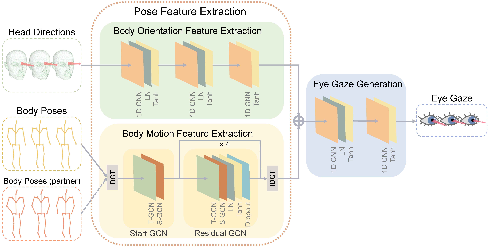

Pose2Gaze: Eye-body Coordination during Daily Activities for Gaze Prediction from Full-body Poses
Zhiming Hu, Jiahui Xu, Syn Schmitt, Andreas Bulling
IEEE Transactions on Visualization and Computer Graphics (TVCG, oral presentation at ISMAR 2024), 2025, 31(9): 4655-4666.

Abstract
Human eye gaze plays a significant role in many virtual and augmented reality (VR/AR) applications, such as gaze-contingent rendering, gaze-based interaction, or eye-based activity recognition. However, prior works on gaze analysis and prediction have only explored eye-head coordination and were limited to human-object interactions. We first report a comprehensive analysis of eye-body coordination in various human-object and human-human interaction activities based on four public datasets collected in real-world (MoGaze), VR (ADT), as well as AR (GIMO and EgoBody) environments. We show that in human-object interactions, e.g. pick and place, eye gaze exhibits strong correlations with full-body motion while in human-human interactions, e.g. chat and teach, a person’s gaze direction is correlated with the body orientation towards the interaction partner. Informed by these analyses we then present Pose2Gaze – a novel eye-body coordination model that uses a convolutional neural network and a spatio-temporal graph convolutional neural network to extract features from head direction and full-body poses, respectively, and then uses a convolutional neural network to predict eye gaze. We compare our method with state-of-the-art methods that predict eye gaze only from head movements and show that Pose2Gaze outperforms these baselines with an average improvement of 24.0% on MoGaze, 10.1% on ADT, 21.3% on GIMO, and 28.6% on EgoBody in mean angular error, respectively. We also show that our method significantly outperforms prior methods in the sample downstream task of eye-based activity recognition. These results underline the significant information content available in eye-body coordination during daily activities and open up a new direction for gaze prediction.Presentation Video
Demo Video
Links
BibTeX
@article{hu24pose2gaze,
author={Hu, Zhiming and Xu, Jiahui and Schmitt, Syn and Bulling, Andreas},
journal={IEEE Transactions on Visualization and Computer Graphics},
title={Pose2Gaze: Eye-body Coordination during Daily Activities for Gaze Prediction from Full-body Poses},
year={2025},
volume={31},
number={9},
pages={4655--4666},
doi={10.1109/TVCG.2024.3412190}}